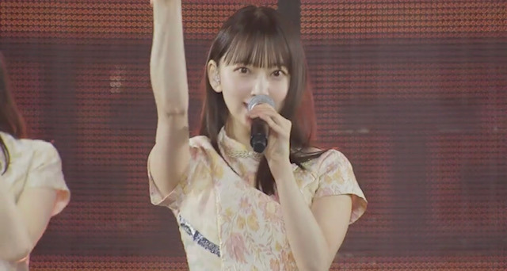
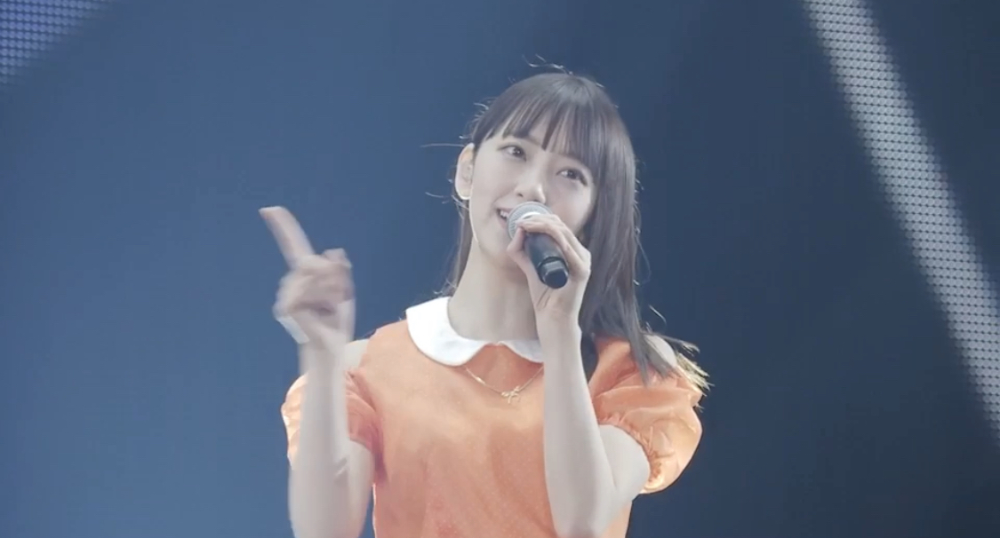
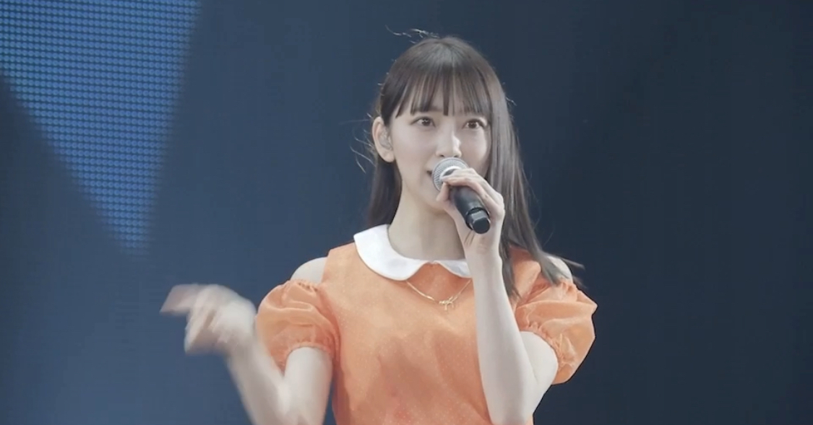
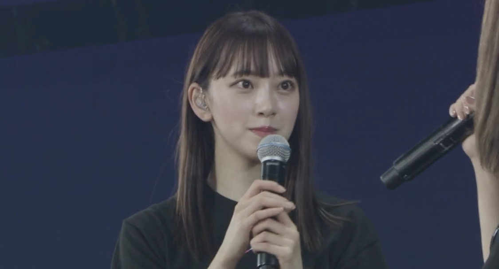

2020/0124Friスポットライトが眩しいと
台北アリーナライブの髪型は珍しくストレートでした！
来られなかった方に少しだけお裾分け♫




three fold choiceやバレッタを披露できて嬉しかったです❤︎
スリフォの衣装は
そんなバカなのMVで着た衣装でした~
懐かしい！
みなみがピンク、私がオレンジ、飛鳥が水色を！
私はサイリウムカラーがオレンジx白なので
嬉しかったです
ちなみにMVでは水色を着てました
ライブといえば
3月7日に2期生ライブ@代々木第一体育館
が発表されました♫
初めての単独ライブ。
前からやりたいとみんなで話していて、ずっとずっと願い続けてようやく叶いました！！
ありがとうございます...
卒業した2期生の分も、いまいる2期生みんなで頑張りたいと思います
楽しみだなぁ
是非、観に来てください♫
では！
2020/01/24 20:30
コメント(321)
台北ライブお疲れさま。いやいや、どの写真も可愛すぎ！
そして、2期生単独ライブの決定おめでとう。
元々強かった未央奈ちゃんの2期生愛がここ数年はかなり表面化してたようだけど、ぜひともその溢れる2期生愛でライブも大成功させて下さい。
応援してますね！！
そして、2期生単独ライブの決定おめでとう。
元々強かった未央奈ちゃんの2期生愛がここ数年はかなり表面化してたようだけど、ぜひともその溢れる2期生愛でライブも大成功させて下さい。
応援してますね！！
未央奈さん、台北ライブお疲れ様。
今日も安定の可愛さですね。
2期生ライブおめでとう。
2期生全員でやれたら最高だけど、
今いるメンバーで「これが乃木坂だ。」
というライブを魅せて下さい。
まいちゅんのラジオでライブ企画を
やってたんで、2期生全員で投稿して
みたら面白いんじゃない。
「2期生会」も地上波で見てみたいな〜。
ライブ楽しみにしてるんで頑張ってね。
じゃあ、またね〜。
今日も安定の可愛さですね。
2期生ライブおめでとう。
2期生全員でやれたら最高だけど、
今いるメンバーで「これが乃木坂だ。」
というライブを魅せて下さい。
まいちゅんのラジオでライブ企画を
やってたんで、2期生全員で投稿して
みたら面白いんじゃない。
「2期生会」も地上波で見てみたいな〜。
ライブ楽しみにしてるんで頑張ってね。
じゃあ、またね〜。
2期生単独ライブおめでとう！！！
しかも未央奈の日(3/07)だね！！！
体調には気をつけて
応援してます
しかも未央奈の日(3/07)だね！！！
体調には気をつけて
応援してます
台北ライブお疲れ様！！
2期生単独も楽しみにしてます！
これからも頑張ってください！
応援してます！
2期生単独も楽しみにしてます！
これからも頑張ってください！
応援してます！
単独ライヴ頑張ってください！応援しています！
ライブの写真!!めちゃかわいい( Ꙭ)
この間(結構前??)テレビで見た時も可愛かったです!
2期生単独ライブも頑張ってください！
୧⍢⃝୨୧⍢⃝୨୧⍢⃝୨୧⍢⃝୨୧⍢⃝୨୧⍢⃝୨୧⍢⃝୨୧⍢⃝୨୧⍢⃝୨୧⍢⃝୨
この間(結構前??)テレビで見た時も可愛かったです!
2期生単独ライブも頑張ってください！
୧⍢⃝୨୧⍢⃝୨୧⍢⃝୨୧⍢⃝୨୧⍢⃝୨୧⍢⃝୨୧⍢⃝୨୧⍢⃝୨୧⍢⃝୨୧⍢⃝୨
未央奈ちゃん好きだよ！
台北でのライブお疲れ様！！スリフォの衣装そんなバカなの衣装だったなんて初めて知ったʬʬʬ衣装来てる画像載ってたけどすごく似合っててかわいかったよ そして、2期生での初の単独ライブおめでとう 今年は2期生の今までの努力がもっと報われるようになったらいいね また更新待ってるね！！
未央奈〜！
台北ライブお疲れ様＾＾
二期生単独ライブおめでとう^ - ^
やっと夢が叶うね！
スリフォの衣装懐かしい(^｡^)
卒業したメンバーの分まで頑張ってね！
台北ライブお疲れ様＾＾
二期生単独ライブおめでとう^ - ^
やっと夢が叶うね！
スリフォの衣装懐かしい(^｡^)
卒業したメンバーの分まで頑張ってね！
台湾お疲れ様でしたー
バスラも行きたかったけど行けないから2期生単独ライブは行きますー
バスラも行きたかったけど行けないから2期生単独ライブは行きますー
こんばんは。
台北ライブお疲れ様でした。
2期生ライブ決定おめでとうございます。
ストレート似合って可愛いですね。
台北ライブお疲れ様でした。
2期生ライブ決定おめでとうございます。
ストレート似合って可愛いですね。
堀ちゃんんん！
改めてかわいすぎませんか？？？
本当にめちゃくちゃ好きです尊い
2期生単独ライブもおめでとう！！
誰よりも応援してます！！
改めてかわいすぎませんか？？？
本当にめちゃくちゃ好きです尊い
2期生単独ライブもおめでとう！！
誰よりも応援してます！！
みおなちゃんブログありがとう
2期生ライブ絶対行くよ！
チケット争奪戦がどんなに激しくても念力でゲットします。
バスラも2期ライブも写真集も楽しみすぎるから仕事でクタクタでもがんばれるよ、いつもワクワクさせてくれてありがとう。
2期生ライブ絶対行くよ！
チケット争奪戦がどんなに激しくても念力でゲットします。
バスラも2期ライブも写真集も楽しみすぎるから仕事でクタクタでもがんばれるよ、いつもワクワクさせてくれてありがとう。
代々木のライブ行きたいなー
乃木中のツインテール可愛かったし未央奈すごい美人でやばーい(๑ơ ₃ ơ)♥（語彙力皆無
乃木中のツインテール可愛かったし未央奈すごい美人でやばーい(๑ơ ₃ ơ)♥（語彙力皆無
2期生ライブおめでとう！
めちゃめちゃ楽しみーー！卒業生も皆来れたらいいな。
めちゃめちゃ楽しみーー！卒業生も皆来れたらいいな。
みおな
ほぉ。
スリフォって読んでるのねー。
あの曲好きだわぁ。
ほぉ。
スリフォって読んでるのねー。
あの曲好きだわぁ。
台北お疲れ様です！
2期生単独ライブ、やっとですね！
birthdayliveも1ヶ月を切って
忙しくなると思いますが、自分に
自身を持って未央奈らしく、無理せず
全力で楽しんでください！
2期生単独ライブ、やっとですね！
birthdayliveも1ヶ月を切って
忙しくなると思いますが、自分に
自身を持って未央奈らしく、無理せず
全力で楽しんでください！
未央奈ちゃん、ブログ更新ありがとう！
台北ライブ楽しかったんだね〜いいな〜
衣装も本人たちもかわいい！！その中でも未央奈ちゃんが1番です！
ストレートの髪型、めっちゃかわいい！最高！日本の活動でもやってくれたら嬉しいです。。
そして、
2期生単独ライブ、おめでとうございます！！！！！
とってもとっても嬉しいです！ついにって感じです！楽しみすぎてやばいですよ……
次のバスラ、2期生単独ライブ、などなど頑張ってください！
台北ライブ楽しかったんだね〜いいな〜
衣装も本人たちもかわいい！！その中でも未央奈ちゃんが1番です！
ストレートの髪型、めっちゃかわいい！最高！日本の活動でもやってくれたら嬉しいです。。
そして、
2期生単独ライブ、おめでとうございます！！！！！
とってもとっても嬉しいです！ついにって感じです！楽しみすぎてやばいですよ……
次のバスラ、2期生単独ライブ、などなど頑張ってください！
ストレートの髪型も好きだけど？
一番はまとめ髪の未央奈ちゃん好きだな！
両方まよっちゃうんだよな～
一番はまとめ髪の未央奈ちゃん好きだな！
両方まよっちゃうんだよな～
未央奈
ライブお疲れ様です
画像ありがとう
２期生ライブ楽しみにしてるね
まさか未央奈の誕生日に開催するなんて
すごいね
頑張って
またコメントするね
SONYでした‼️(* ´ ▽ ` *)
ライブお疲れ様です
画像ありがとう
２期生ライブ楽しみにしてるね
まさか未央奈の誕生日に開催するなんて
すごいね
頑張って
またコメントするね
SONYでした‼️(* ´ ▽ ` *)
やはり２期の推しはみおなさんです。
ブログ更新ありがとー！
ストレートいいと思います！ぜひ今後もやって欲しいです。
二期単独ライブおめでとう！！
やっと６年半～７年ぐらいの夢が叶って僕も嬉しいです。
更新がんばってください！！
応援してます！！
ストレートいいと思います！ぜひ今後もやって欲しいです。
二期単独ライブおめでとう！！
やっと６年半～７年ぐらいの夢が叶って僕も嬉しいです。
更新がんばってください！！
応援してます！！
ストレートの髪の堀ちゃんも可愛い～～～～！
２期ライブ楽しみ過ぎる～～～～！
２期ライブ楽しみ過ぎる～～～～！
台北の写真ありがとう(v^-ﾟ)
ストレートみおな好き！（＞ｙ＜）
中学生のふくふくより
ストレートみおな好き！（＞ｙ＜）
中学生のふくふくより
堀ちゃん、ブログ更新ありがとう〜
堀ちゃんの握手会で、
2期生単独ライブやって欲しいと
何回もお願いしていたので
本当に、本当に嬉しいー
やったー
後は、なんとしてもチケット確保したい！
今から楽しみだよー
堀ちゃんの握手会で、
2期生単独ライブやって欲しいと
何回もお願いしていたので
本当に、本当に嬉しいー
やったー
後は、なんとしてもチケット確保したい！
今から楽しみだよー
[スポットライトが眩しいと]ありがとー❗
未央奈のストレート、やっぱり好きだな。 まあでも、
世界の全髪型の74%ぐらいは似合うんじゃあないかと。わかんないけど。
『二期生単独ライブ』おめでとう❗と、うれしい❗です。
これまでがんばって来た分の成果が返ってきたんじゃあないかと。わかんないけど。
『スカウトマン』大好きなんです。
次回のブログ楽しみです❗
未央奈のストレート、やっぱり好きだな。 まあでも、
世界の全髪型の74%ぐらいは似合うんじゃあないかと。わかんないけど。
『二期生単独ライブ』おめでとう❗と、うれしい❗です。
これまでがんばって来た分の成果が返ってきたんじゃあないかと。わかんないけど。
『スカウトマン』大好きなんです。
次回のブログ楽しみです❗
念願の単独ライブおめでとうございます！
今から楽しみですね！
行ければ行きたい。
思い続ければいつかきっと願いは叶う。
2期生の輝ける場がまた一つ増えて嬉しく思います。
★とし★
今から楽しみですね！
行ければ行きたい。
思い続ければいつかきっと願いは叶う。
2期生の輝ける場がまた一つ増えて嬉しく思います。
★とし★
まじでかわいいです
二期生ライブほんとに行きたいです
がんばってください
バスラ楽しみにしてます！
二期生ライブほんとに行きたいです
がんばってください
バスラ楽しみにしてます！
みおな こんばんは
良かった❗️ ライブ❗️
是非、見に行きたいと思います
でも、倍率高そうだなぁ
良かった❗️ ライブ❗️
是非、見に行きたいと思います
でも、倍率高そうだなぁ
ブログ更新ありがとう！
二期生ライブおめでとう!!!
二期生ライブおめでとう!!!
写真たくさん載せてくれてありがとう！
ストレートさらさら
2期生ライブ開催できて嬉しいなぁ。おめでとう！
でも、満足したら安心してしまいそうだから次は2期生単独で東京ドームを目指して下さい。
ストレートさらさら
2期生ライブ開催できて嬉しいなぁ。おめでとう！
でも、満足したら安心してしまいそうだから次は2期生単独で東京ドームを目指して下さい。
みおちゃんブログありがとう。
改めて、台北ライブお疲れさま。
みおちゃんが一番眩しいよ！
3/7、2期生ライブおめでと。
すんごい楽しみです。
チケット当たるかな…当たりますように！
改めて、台北ライブお疲れさま。
みおちゃんが一番眩しいよ！
3/7、2期生ライブおめでと。
すんごい楽しみです。
チケット当たるかな…当たりますように！
台北ライブお疲れ様！
２期生単独ライブ
もう寝ます、、おやすみ
またねー
ブログありがとう〜！
ライブお疲れ様〜！
スリフォの衣装なんか見たことあるな〜って思ったらそんなバカのやつなんだね！その衣装好きだから次披露する時もその衣装でやって欲しい！
ライブお疲れ様〜！
スリフォの衣装なんか見たことあるな〜って思ったらそんなバカのやつなんだね！その衣装好きだから次披露する時もその衣装でやって欲しい！
2期生ライブ決定おめでとう！
本当にうれしい
最高の日になりますように
本当にうれしい
最高の日になりますように
海外いけないし
やっぱりシンプルな綺麗さが好きだ〰️
やっぱりシンプルな綺麗さが好きだ〰️
未央奈ちゃん！絶対に2期ライブ行きたい！！
当たりますように！！！
当たりますように！！！
台北ライブお疲れ様！
そして改めて2期生単独ライブおめでとう！2期生ライブ、そしてバスラに向けて頑張ってください！体調だけは気をつけてください！
そして改めて2期生単独ライブおめでとう！2期生ライブ、そしてバスラに向けて頑張ってください！体調だけは気をつけてください！
ブログ更新ありがとう！未央奈ちゃんのストレート可愛い。3月7日の2期生のライブ本当に楽しみ。その前にバスラですね！それではまたブログ更新したらコメントするね。
ブログ更新ありがとー！
台北ライブお疲れ様です！three foldchoiceめっちゃ好きな曲なので生で見たかったです！
2期ライブ本当におめでとうございます！本当に嬉しくて絶対当てて行きますね！
台北ライブお疲れ様です！three foldchoiceめっちゃ好きな曲なので生で見たかったです！
2期ライブ本当におめでとうございます！本当に嬉しくて絶対当てて行きますね！
台北お疲れ様でした
2期生ライブ楽しみですね
2期生ライブ楽しみですね
みおなさんの髪型いつもストレートではないですか。ところで、どんな髪型でも可愛いですと思いますよ。たとえ刈り上げても。刈り上げ試しますか。笑
ライブで印象的なのはやっぱり君の名は希望でしたね。皆たぶん中国語の言語構造について概念が全然ないなのにただ発音の暗記を繰り返してだけで歌詞を覚えたんだ。頑張りました。ありがとうございます。
2期のライブおめでとうございます。
この初心をずっと忘れてないので神様に聞かれただから。
願う時間が長ければ長いほどその叶いの喜びももっと大きなのでしょうね。
しかも307はあれですね、ミオナの名前の日ですね、なんか二期全体を代表して背負った感じ。余計なことかもしれないですがあんまり自分に対しての要求しすぎないで平常のままに全力で走って悔い残さないの人生にすればそれがとても良いです。
頑張って。
ライブで印象的なのはやっぱり君の名は希望でしたね。皆たぶん中国語の言語構造について概念が全然ないなのにただ発音の暗記を繰り返してだけで歌詞を覚えたんだ。頑張りました。ありがとうございます。
2期のライブおめでとうございます。
この初心をずっと忘れてないので神様に聞かれただから。
願う時間が長ければ長いほどその叶いの喜びももっと大きなのでしょうね。
しかも307はあれですね、ミオナの名前の日ですね、なんか二期全体を代表して背負った感じ。余計なことかもしれないですがあんまり自分に対しての要求しすぎないで平常のままに全力で走って悔い残さないの人生にすればそれがとても良いです。
頑張って。
こんにちは‼︎
ブログ更新、ありがとうございます♪
髪型ストレートの未央奈のおすそ分け、ありがとうございます‼︎
前髪の透け感、全体的なツヤ感、とってもいい感じ♪
また、個人的な好みではあるんだけど…
ストレートなのに耳が見えてる感じ、これがとっても好き‼︎
いつか直接、目にすることができたらいいなあ♪
髪型チェンジって、お化粧や服装のセレクトとともに、手軽にイメチェンできるアイテムの1つですよね‼︎
また、いろんな未央奈の一面を見せてもらえると嬉しいです♪
そうそう、2期生単独ライブの開催決定。
おめでとうございます‼︎
2期生の独自色を出せるといいですね♪
限定アレンジで、未央奈のラップ披露とかね(笑)。
週刊プレイボーイさんが付けていたタイトル、『2番目は嵐』。
見た瞬間、なんて上手い表現をするんだ、って思いました。
綺麗、可愛いだけでは収まらない個性派集団。
それが2期生の魅力なんだと思います。
2期生らしい、心に突き刺さるようなライブを期待してます‼︎
ではでは、また。
明日も未央奈にとっていい1日になりますように♪
ブログ更新、ありがとうございます♪
髪型ストレートの未央奈のおすそ分け、ありがとうございます‼︎
前髪の透け感、全体的なツヤ感、とってもいい感じ♪
また、個人的な好みではあるんだけど…
ストレートなのに耳が見えてる感じ、これがとっても好き‼︎
いつか直接、目にすることができたらいいなあ♪
髪型チェンジって、お化粧や服装のセレクトとともに、手軽にイメチェンできるアイテムの1つですよね‼︎
また、いろんな未央奈の一面を見せてもらえると嬉しいです♪
そうそう、2期生単独ライブの開催決定。
おめでとうございます‼︎
2期生の独自色を出せるといいですね♪
限定アレンジで、未央奈のラップ披露とかね(笑)。
週刊プレイボーイさんが付けていたタイトル、『2番目は嵐』。
見た瞬間、なんて上手い表現をするんだ、って思いました。
綺麗、可愛いだけでは収まらない個性派集団。
それが2期生の魅力なんだと思います。
2期生らしい、心に突き刺さるようなライブを期待してます‼︎
ではでは、また。
明日も未央奈にとっていい1日になりますように♪
いつもブログ更新ありがとう！
台北の写メありがとう！
ストレートの髪型めちゃくちゃ可愛いです！
台北に行きたかったなー。
2期生の単独ライブおめでとう！
私もずっと待ってました！！本当に良かったね！
まだチケットも取れてもいないけど、
ライブに行けるように仕事を調整してます笑
2期生ライブ頑張ってくださいね！
夜は冷え込みますから、夜は暖かくしてくださいね！
いつも応援してます！
台北の写メありがとう！
ストレートの髪型めちゃくちゃ可愛いです！
台北に行きたかったなー。
2期生の単独ライブおめでとう！
私もずっと待ってました！！本当に良かったね！
まだチケットも取れてもいないけど、
ライブに行けるように仕事を調整してます笑
2期生ライブ頑張ってくださいね！
夜は冷え込みますから、夜は暖かくしてくださいね！
いつも応援してます！
いつも未央奈ちゃん見て勉強頑張ってます！！
またライブ行きたいです！！！
またライブ行きたいです！！！
今の髪型凄く好きです。
最近お顔もシュッとした感じになって、
とても似合ってると思います。
お裾分けして頂いた写真も
凄くキラキラしてて輝いて見えます
これからもお仕事を楽しんで益々輝いて下さい！
いつも元気を貰ってます、ありがとね！
最近お顔もシュッとした感じになって、
とても似合ってると思います。
お裾分けして頂いた写真も
凄くキラキラしてて輝いて見えます
これからもお仕事を楽しんで益々輝いて下さい！
いつも元気を貰ってます、ありがとね！
こんばんは。ブログ更新ありがとうございます。
台北ライブ、お疲れ様でしたー。オレンジの衣装、可愛いと思います。片耳出しのヘアスタイルも似合ってますね。台湾のファンにも良いアピールになったと思います。
上海と台北のライブは2年連続になりますかね。今後も続けてライブ出来たら良いなと思います。握手会はコスト的に難しいと思うので、ひたすらライブでファンを増やすしかないのですが、売り上げにつながると良いなと思います。
ではまた。
台北ライブ、お疲れ様でしたー。オレンジの衣装、可愛いと思います。片耳出しのヘアスタイルも似合ってますね。台湾のファンにも良いアピールになったと思います。
上海と台北のライブは2年連続になりますかね。今後も続けてライブ出来たら良いなと思います。握手会はコスト的に難しいと思うので、ひたすらライブでファンを増やすしかないのですが、売り上げにつながると良いなと思います。
ではまた。
絶対に行きます
もう休みも取ったし！
当たるといいなぁ
もう休みも取ったし！
当たるといいなぁ
未央奈、ブログ更新ありがとうー！
台北ライブ行きたかったー。かわいい未央奈の写真ありがとーー
お疲れ様。
そして、乃木坂46ANNプレゼンツ、二期生単独ライブおめでとう！ANN聴いててうわー！！ってなったよ！
ファンの夢でもあった。うれしーーね。
ANNメール読まれて、会場全員でANNのジングルの録音することになったよー！
レコメン！読まれるように頑張るね
またねね
ようちゃんマン
台北ライブ行きたかったー。かわいい未央奈の写真ありがとーー
お疲れ様。
そして、乃木坂46ANNプレゼンツ、二期生単独ライブおめでとう！ANN聴いててうわー！！ってなったよ！
ファンの夢でもあった。うれしーーね。
ANNメール読まれて、会場全員でANNのジングルの録音することになったよー！
レコメン！読まれるように頑張るね
またねね
ようちゃんマン


台北ライブ、楽しかったみたいだ何よりです。
スリフォの衣装の堀ちゃんがカワイイ！
ストレートの髪が衣装にぴったりだ。
2期生ライブ開催決定おめでとう！
ぜひぜひ行きたいなー、チケット取れるかなー、
信じていれば抽選にも当たるよね！
来週東京はまた雪が降って寒いみたいだけど、
風邪などひかないように暖かくしてね。
ではでは。